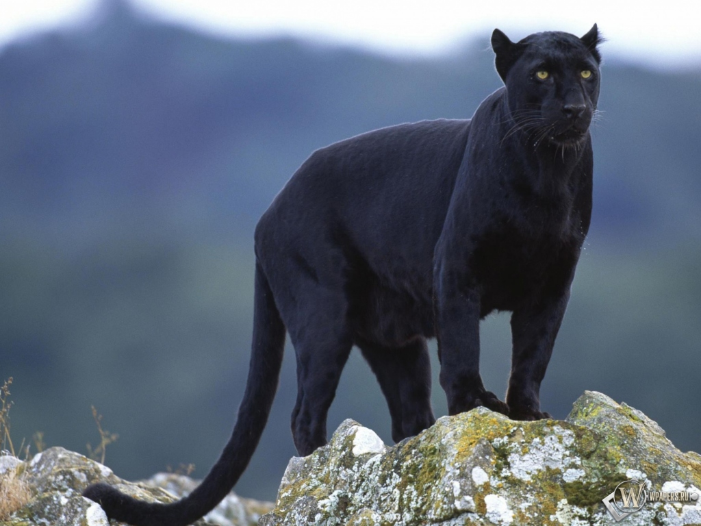
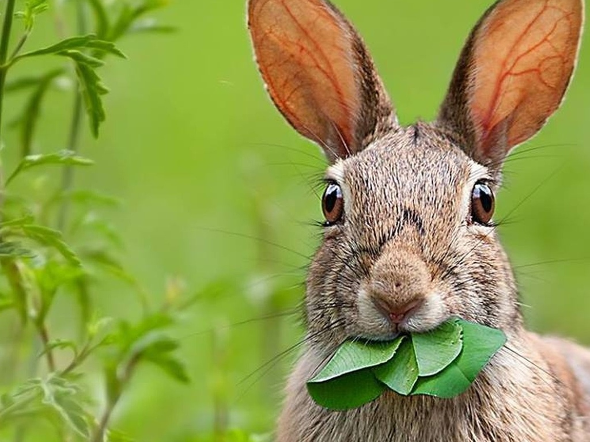

Tоп-10 самых опасных животных ☻

Пантера (Panthera) — рід ссавців родини котових (Felidae), який містить чотири сучасних види: тигр (Panthera tigris), лев (Panthera leo), ягуар (Panthera onca) і пантера плямиста, або пардус (Panthera pardus). Рід охоплює приблизно половину обсягу підродини пантерових (Pantherinae) і є типовим родом цієї підродини.
На вигляд це звичайна медуза, але дуже отруйна.))))

Зайцы (лат. Lepus) — род из семейства зайцевых. Распространены везде, кроме Австралии и Антарктиды, всего около 30 видов. Отличаются длинными ушами, коротким поднятым хвостом, недоразвитыми ключицами, длинными задними лапами, что позволяет им двигаться прыжками. Русак может достигать скорости 70 км/ч.